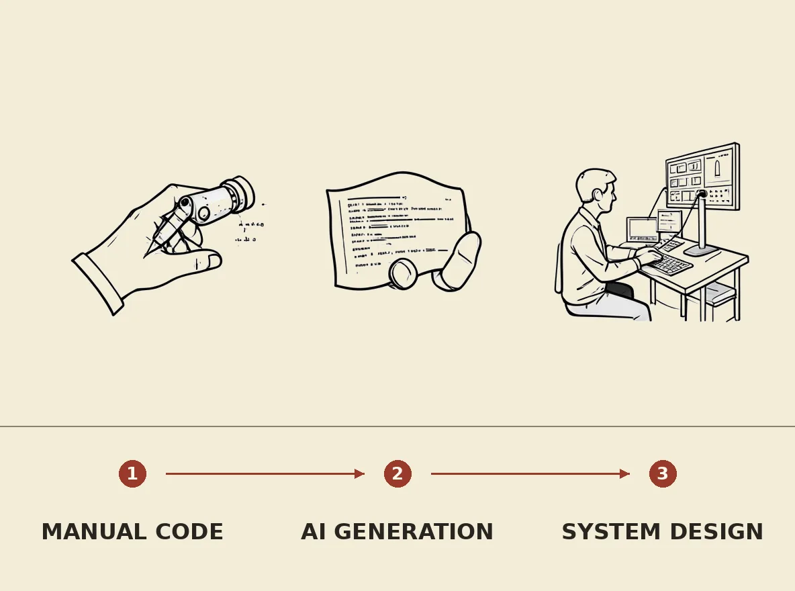

Proton has released an AI manifesto for software engineering, declaring that AI models, particularly LLMs, have fundamentally transformed the industry by making manual code writing largely obsolete. The manifesto explains that AI can now efficiently handle tasks like code generation, documentation, testing, and boilerplate, which were previously time-consuming and often neglected by human engineers. This shift necessitates rapid AI adoption for companies to remain competitive and secure, transforming engineering roles and offering new opportunities for professionals who adapt to these AI-driven workflows.